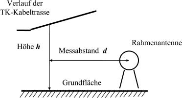
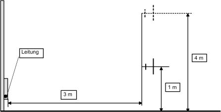

- 1
Allgemeine Einführung
- 1.1
Geltungsbereich
Diese Messvorschrift enthält Verfahren für die Messung von Störaussendungen aus Telekommunikationsanlagen (TK-Anlagen) und -Netzen an deren Aufstell- und Betriebsort. Gegenstand der Messungen sind die Störaussendungen im Bereich des Funkfrequenzspektrums, die durch die Nutzung von Frequenzen für die Informationsübertragung in und längs von Leitern verursacht werden.
Diese Messvorschrift beschreibt zusätzlich Hilfsverfahren zur Ermittlung der Störaussendung, wenn die digitalen Signale auf direktem Wege nicht messbar sind.
Zu den betreffenden Netzen gehören z. B. Weitbereichs-Datennetze (WAN), lokale Datennetze (LAN) und Kabelfernsehnetze sowie Technologien für den Zugangsbereich unter Nutzung von Energieversorgungs- und Telefonnetzen.
Zu den Funkanwendungen, die durch Störaussendungen beeinträchtigt werden können, gehören u. a. Sende- und Empfangseinrichtungen mobiler Funkdienste, Hör- und Fernsehrundfunkempfänger, Empfangseinrichtungen fester Funkdienste sowie der Flugfunk- und Flugnavigationsfunkdienst.
Der Schutz vor Störaussendungen aus TK-Netzen wird insbesondere in der ITU-R RR S15.12 gefordert. Darüber hinaus ist er nach Artikel 4 Absatz 2 der Richtlinie 2004/108/EG des Europäischen Parlaments und des Rates vom 15. Dezember 2004 (ABl. EG Nr. L 390 S. 24) (EMV-Richtlinie) vorgesehen.
Diese Messvorschrift trifft keine Regelungen zur Messung von Aussendungen elektrischer oder elektronischer Geräte, die im Rahmen von Konformitätsprüfungen nach dem Gesetz über die elektromagnetische Verträglichkeit von Betriebsmitteln (EMVG) oder dem Gesetz über Funkanlagen und Telekommunikationsendeinrichtungen (FTEG) zur Anwendung kommen.
- 1.2
Frequenzbereich
Diese Messvorschrift gilt für den Frequenzbereich von 9 kHz bis 3 GHz.
- 1.3
Messverfahren
Diese Messvorschrift beschreibt das Verfahren zur Messung der von TK-Anlagen und -Netzen ausgehenden und mit den leitungsgeführten Nutzsignalen einhergehenden Störaussendungen.
- 1.4
Grenzwerte
Die Grenzwerte ergeben sich aus Anlage 2 zu dieser Verordnung.
- 2
Begriffe und Abkürzungen
Im Rahmen dieser Vorschrift gelten folgende Definitionen:
Antennenbezugspunkt: Geometrischer Mittelpunkt der Antenne oder der Bezugspunkt, auf den im Antennenkalibrierverfahren Bezug genommen wird.
Aussendung: Erscheinung, bei der elektromagnetische Energie aus einer Quelle austritt (IEC – IEV 161-01-08).
Detektor-Bewertungsfaktor: Unterschied zwischen der Anzeige des Quasispitzenwert-Detektors (QP-Detektor) und der Anzeige des Spitzenwert-Detektors (PK-Detektor) für ein bestimmtes Signal.
Elektromagnetische Störgröße: Elektromagnetische Erscheinung, die die Funktion eines Geräts, einer Ausrüstung oder eines Systems beeinträchtigen oder lebende oder tote Materie ungünstig beeinflussen kann (IEC – IEV 161-01-05).
Funk(frequenz)störgröße: Elektromagnetische Störgröße mit Anteilen im Funkfrequenzbereich (IEC – IEV 161-01-13).
Hilfsträger: Schmalbandiges Signal, das in definierter Relation zu dem zu bewertenden Digitalsignal steht.
Messbandbreite: Die jeweils am Messempfänger verwendete Bandbreite (gem. EN 55016-1-1).
Mindestversorgung: In der Regel ist die Mindestversorgung im Sinne der vorliegenden Messvorschrift am Ort der Messungen immer dann gegeben, wenn dort die erforderliche Mindest-Nutzfeldstärke für den jeweiligen Funkdienst bzw. die jeweilige Funkanwendung nachweisbar ist.
Normentfernung: Abstand (Messentfernung) zwischen dem Bezugspunkt der Messantenne und dem nächstgelegenen Teil des TK-Netzes. Die Normentfernung beträgt 3 m.
Nutzsignal: Das Nutzsignal umfasst das für die Kommunikation in und längs von Leitern erforderliche Frequenzspektrum.
Störfeldstärke: Feldstärke, die an einer bestimmten Stelle durch eine elektromagnetische Störgröße erzeugt und unter festgelegten Bedingungen gemessen wird (IEC – IEV 161-04-02).
Anmerkung:
Im Sinne dieser Messvorschrift werden nur die Komponenten der leitungsgeführten Nutzsignale als Störgrößen betrachtet, die Störaussendungen in Form von Feldern in der Umgebung oder auch fernab von Leitern erzeugen können.
Telekommunikationsanlage: Technische Einrichtungen oder Systeme, die als Nachrichten identifizierbare elektromagnetische oder optische Signale senden, übertragen, vermitteln, empfangen, steuern oder kontrollieren können.
Telekommunikationsnetz: Gesamtheit der technischen Einrichtungen (Übertragungswege, Vermittlungseinrichtungen und sonstige Einrichtungen, die zur Gewährleistung eines ordnungsgemäßen Betriebs des Telekommunikationsnetzes unerlässlich sind), an die über Abschlusseinrichtungen Endeinrichtungen angeschlossen werden.
Anmerkung:
Zur Vereinfachung wird in der Messvorschrift nachfolgend teilweise nur vom TK-Netz gesprochen, die Aussagen gelten jedoch gleichermaßen für TK-Anlagen.
Unerwünschte Aussendung: Signal, das den Empfang eines Nutzsignals beeinträchtigen kann (IEC – IEV 161-01-03).
Störaussendung: Durch leitungsgeführtes elektrisches Nutzsignal verursachter elektromagnetischer Energieanteil, der den Leiter unerwünscht verlässt und durch Induktion, Influenz oder Strahlungskopplung den Funkverkehr störend beeinträchtigen kann.
- 3
Übersicht über die Messverfahren
- 3.1
Vorgehen bei der Bearbeitung von Störungsmeldungen
- 3.2
Vorgehen bei der Überprüfung von TK-Anlagen und -Netzen auf Einhaltung der Anforderungen nach dieser Verordnung
- 4
Grundsätze zur Vorbereitung und Durchführung der Messungen
- 4.1
Allgemeines
Das Erfragen sämtlicher technischer Informationen, die zum umfassenden Verständnis der Betriebsparameter und der Topologie des zu messenden TK-Netzes erforderlich sind, ist unumgänglich. Der Betreiber des TK-Netzes sollte beispielsweise Angaben der EMV-relevanten Spezifikationen sowie der Parameter der Kabel und Verbindungshardware zur Verfügung stellen. Die Angaben sollten in jedem Fall durch die nachfolgend beschriebene Voruntersuchung überprüft werden, um auszuschließen, dass unerwünschte Aussendungen aus dem TK-Netz gemessen werden, die den Regelungen des EMVG oder FTEG für die Konformitätsprüfung von Geräten unterliegen oder möglicherweise aus einem anderen als dem untersuchten TK-Netz stammen.
- 4.2
Betriebsparameter des TK-Netzes
Grundlegende Betriebsparameter, die zur Durchführung der Messungen bekannt sein müssen, sind: die spektrale Amplitudenverteilung und die Frequenzmerkmale der leitungsgeführten Nutzsignale sowie die Betriebsart(en) im TK-Netz, die auf einigen oder allen der zu überprüfenden Frequenzen die höchsten Störsignalpegel verursachen.
Möglicherweise muss auch festgestellt werden, ob durch eine dynamische Leistungsregelung Schwankungen in der spektralen Amplitudenverteilung auftreten und die Merkmale des Frequenzspektrums in Abhängigkeit von der gegebenen Datenübertragungsgeschwindigkeit variieren können.
Die Betriebsparameter lassen sich messtechnisch am sichersten bei einem hohen Störabstand zwischen Summensignal und Rauschen (Verhältnis von (S+N) zu N) mit Hilfe einer am Anfang (oder Ende) der betreffenden TK-Leitung aufgesetzten Stromzange und einem automatisch abstimmbaren Messempfänger mit Panorama-Anzeige zur Überwachung des leitungsgeführten Stroms bestimmen. Um die notwendigen Eingriffe am Netz vornehmen zu können, ist in der Regel die Zusammenarbeit mit dem Netzbetreiber erforderlich.
Im Rahmen einer Voruntersuchung ist zu klären, ob die nachweisbaren Störaussendungen im Sinne der Begriffsbestimmung nach Abschnitt 2 dieser Messvorschrift oder sonstige unerwünschte Aussendungen aus angeschlossenen elektronischen Geräten sind, die dem leitungsgeführten Nutzsignal nicht zugeordnet werden können. Die im Frequenzspektrum des leitungsgeführten Nutzsignals nachweisbaren Störaussendungen unterliegen den Bestimmungen dieser Verordnung, wenn sie nicht als sonstige unerwünschte Aussendungen identifizierbar sind.
Für beide Messanlässe (siehe Abschnitte 4.3.1 und 4.3.2) ist ein tragbarer Empfänger mit einer Signalpegelanzeige oder ein anderes praktisches Verfolgungsverfahren erforderlich, um feststellen und aufzeichnen zu können, wo die Pegel der abgestrahlten Störaussendung am höchsten sind.
- 4.3
Wahl der Messorte
Die Wahl der Messorte hängt vom Anlass der Messung ab. Als Anlässe für Messungen kommen die Bearbeitung von Störungsmeldungen (siehe Abschnitt 3.1) oder die Überprüfung (siehe Abschnitt 3.2) von TK-Anlagen und -Netzen auf Einhaltung der Bestimmungen nach dieser Verordnung infrage.
- 4.3.1
Bearbeitung von Störungsmeldungen
Bei der Bearbeitung von Störungen sollte der erste Messort an dem Teil der Übertragungsleitung (im Innen- oder Außenbereich) liegen, der der gestörten Funkempfangseinrichtung und/oder Antenne der Störsenke am nächsten liegt.
- 4.3.2
Überprüfung von TK-Anlagen und -Netzen
Bei der Überprüfung von TK-Anlagen oder -Netzen hängt es von deren Topologie ab, wo die ersten Messungen vorzunehmen sind. Der (Die) Messort(e) sollte(n) da liegen, wo erfahrungsgemäß mit den höchsten Störaussendungen zu rechnen ist. Bei den meisten interaktiven Systemen wird dies z. B. an den Enden der Übertragungsleitung, am Ort ggf. eingesetzter Zwischenverstärker oder an Stoß- oder Leckstellen im Übertragungsweg sein.
Zur Bestimmung der charakteristischen Signalform ist die Messung des Nutzsignals bei geeignetem Störabstand notwendig. Um einen solchen „Fingerabdruck“ des Signals zu erhalten, eignet sich die Messung des leitungsgeführten Stroms an einer zugänglichen Stelle (vgl. Abschnitt 4.2).
- 4.4
Messentfernung
- 4.4.1
Überprüfung von TK-Anlagen und -Netzen
Für Messungen im Innen- und Außenbereich beträgt die Messentfernung d = 3 m (Normentfernung). Diese Entfernung ist der Abstand zwischen dem Bezugspunkt der Messantenne und dem nächstgelegenen Teil des TK-Netzes. Überprüfungen von TK-Anlagen und -Netzen werden in der Regel vor dem Gebäude im Außenbereich durchgeführt. In speziellen Fällen (z. B. Hochhäuser) kann aber davon abgewichen werden.
- 4.4.1.1
Abtragen der Messentfernung bei Messungen im Innenbereich
Wenn der zu untersuchende Teil des TK-Netzes nicht zugänglich ist, sich in oder hinter einer Wand oder in einem Kabelkanal oder Ähnlichem befindet, so ist die Messentfernung d im rechten Winkel von der Vorderkante der Wand oder des Kabelkanals abzutragen.
Wenn in Gebäuden ein freier Abstand zwischen TK-Netz und Messantenne von 3 m aus Platzgründen nicht zur Verfügung steht, kann die o. g. Messentfernung bis auf 1 m reduziert werden. Hierbei sind die Festlegungen der Abschnitte 5.2.1.2 und 6.2.1.2 dieser Messvorschrift zu beachten.
- 4.4.1.2
Abtragen der Messentfernung bei Messungen im Außenbereich
Wird außerhalb von Gebäuden oder ähnlicher Aufbauten gemessen, die Einrichtungen oder Kabel von TK-Netzen enthalten, so ist die Messentfernung d im rechten Winkel von der Außenwand des Gebäudes oder des betreffenden Aufbaus abzutragen.
Verläuft der zu messende Teil des TK-Netzes unterirdisch, so ist die Messentfernung d im rechten Winkel von der senkrechten Projektion des TK-Netzes auf die Bodenoberfläche abzutragen.
Verläuft der zu messende Teil des TK-Netzes oberhalb der Messantenne, so ist die Messentfernung d im rechten Winkel von der senkrechten Projektion des TK-Netzes auf die Grundfläche abzutragen. Das Prinzip ist in Bild 1 dargestellt.

| | Bild 1: | Abtragen des Messabstands dvon der senkrechten Projektion des Verlaufs der TK-Kabeltrasse auf die Grundfläche |
Wenn die Aufstellung der Messantenne in 3 m Messentfernung aufgrund der örtlichen Gegebenheiten außerhalb von Gebäuden nicht möglich ist, ist für Messungen im Frequenzbereich bis 30 MHz das in Abschnitt 5.2.1.3 genannte Messverfahren anzuwenden.
Wenn die zu messende TK-Kabeltrasse deutlich über der für die Messung verfügbaren Höhe des Antennenmasts liegt (z. B. in mehr als 10 m Höhe über der Grundfläche), ist für Messungen im Frequenzbereich bis 30 MHz das in Abschnitt 5.2.1.3 genannte Messverfahren anzuwenden und bei Messungen ab 30 MHz die Störstrahlungsleistung nach Abschnitt 7 zu messen.
- 4.4.2
Bearbeitung von Störungsmeldungen
Zur Ermittlung der Störquelle werden keine spezifischen Messentfernungen festgelegt. Ist die Störquelle eingegrenzt, so werden die nachfolgenden Untersuchungen am betreffenden Teil der TK-Anlage oder des TK-Netzes nach den in Abschnitt 4.4.1 und dessen Unterabschnitten ausgeführten Grundsätzen durchgeführt. Abweichungen von diesen Grundsätzen sind nach Erfordernis und aufgrund des Anlasses zulässig.
- 4.5
Grenzwerte für die zulässige Störaussendung aus TK-Anlagen und -Netzen
Die Grenzwerte für den jeweiligen Frequenzteilbereich sind in Anlage 2 aufgeführt.
Es ist zu beachten, dass es sich bei den in Anlage 2 angegebenen Feldstärkegrenzwerten um Spitzenwerte-Grenzwerte handelt. Um die bei praktischen Messungen mit dem Spitzenwert-Detektor auftretende Unsicherheit zu minimieren, wird für die Messungen jedoch ein Quasispitzenwert-Detektor verwendet.
Um einen direkten Vergleich zwischen gemessenen Quasispitzenwert-Pegeln und Spitzenwert-Grenzwerten vornehmen zu können, müssen die Messergebnisse mit Hilfe eines QP-Bewertungsfaktors korrigiert werden, der zum gemessenen Quasispitzenwert-Pegel addiert werden muss. Dieser Bewertungsfaktor ist von der Bandbreite des Messempfängers und der Signalmuster im zu überprüfenden TK-Netz abhängig.
Sofern der QP-Bewertungsfaktor nicht schon bekannt ist und mit dem Betreiber des TK-Netzes abgestimmt wurde, muss er in der Phase der Voruntersuchungen ermittelt werden. Dies geschieht am einfachsten und genauesten mit Hilfe einer Stromzange, mit der das TK-Netz an einem Punkt mit einem reinen Nutzsignal und einem Störabstand zwischen Summensignal und Rauschen von mindestens 20 dB gemessen wird.
Im Frequenzbereich 30 MHz bis 1 000 MHz kann der QP-Bewertungsfaktor auch ermittelt werden, indem die Antenne in unmittelbare Nähe der Strahlungsquelle gebracht wird.
Im Frequenzbereich 1 000 MHz bis 3 000 MHz brauchen die Messwerte nicht korrigiert werden, da hier ohnehin ein Spitzenwert-Detektor verwendet wird.
- 5
Messungen im Frequenzbereich von 9 kHz bis 30 MHz
- 5.1
Messgeräte
Folgende Messgeräte (nach EN 55016-1-1, EN 55016-1-2 und EN 55016-1-4) sind erforderlich:
- –
ein kalibriertes Messsystem, bestehend aus einem Funkstörmessempfänger und dazugehörender Rahmenantenne zur Messung der magnetischen Feldkomponente und Stativ, bzw.
- –
ein kalibriertes Messsystem, bestehend aus einem Funkstörmessempfänger und dazugehörender Stromzange zur Messung von hochfrequenten Strömen auf Leitungen.
Im Frequenzbereich von 9 kHz bis 150 kHz ist eine Messbandbreite von 200 Hz sowie ein Quasispitzenwert-Detektor zu verwenden.
Im Frequenzbereich von 150 kHz bis 30 MHz ist eine Messbandbreite von 9 kHz sowie ein Quasispitzenwert-Detektor zu verwenden.
Im Bedarfsfall können auch Spezialgeräte wie abgestimmte Rahmenantennen oder Antennen für das elektrische Feld verwendet werden. Für ggf. notwendig werdende Messungen der elektrischen Feldstärke ist ein aktiver Dipol nach den Angaben in Anhang 5 oder ein vergleichbarer Dipol zu verwenden.
Um zu verhindern, dass die Messung durch Erdschleifen beeinflusst wird, ist nach Möglichkeit eine getrennte Stromversorgung (z. B. aus Batterien) des Messempfängers und der Rahmenantenne, ohne Erdung, insbesondere bei Messungen in Gebäuden, zu empfehlen.
- 5.2
Messverfahren
- 5.2.1
Grundsätze
Gemäß Festlegung in Anhang 1 wird die gemessene magnetische Feldstärke über den Feldwellenwiderstand von 377 Ohm in eine elektrische Feldstärke umgerechnet.
Achtung:
Diese Umrechnung wird von einer Reihe von Messgeräten ggf. schon automatisch vorgenommen!
Es muss darauf geachtet werden, dass das TK-System mit den normalen maximalen Signalpegeln und ggf. in der Betriebsart betrieben wird, in der zuvor die höchsten Störfeldstärkepegel festgestellt wurden. Handelt es sich um ein interaktives System, so ist es besonders wichtig, den Rückkanal (upstream) auf das Vorhandensein von Signalen zu überprüfen, falls diese im gleichen Frequenzbereich wie die gemeldete Störung liegen.
Werden Messungen nur auf einer Frequenz oder in einem schmalen Frequenzbereich durchgeführt (z. B. bei der Störungsbearbeitung), so sollte die Antenne so ausgerichtet werden, dass eine maximale Kopplung zum überprüften TK-Netz besteht.
Wenn Messungen auf vielen Frequenzen oder in einem durchzustimmenden Frequenzbereich notwendig sind, sollten separate Messdurchgänge durchgeführt werden, bei denen die Antenne jeweils in einer der drei orthogonalen Richtungen X, Y und Z ausgerichtet ist. Die Daten der einzelnen Messdurchgänge müssen gespeichert werden und für jede Frequenz muss die effektive Feldstärke (Eeff) nach Gleichung (5.1) errechnet werden.
Am einfachsten geschieht dies durch Übertragung der Daten in ein Tabellenkalkulationsblatt und anschließende automatisierte Berechnung von Eeff.
Zur Reduzierung der Messzeit wird empfohlen, die Durchstimmung des zu untersuchenden Frequenzbereichs zunächst unter Nutzung des Spitzenwert-Detektors auszuführen und die gefundenen Maximalwerte der Störfeldstärken danach mit dem Quasispitzenwert-Detektor nachzumessen.
Die Messentfernung d entspricht bei der Rahmenantenne dem Abstand zwischen deren geometrischem Mittelpunkt und dem TK-Netz und beim aktiven Dipol dem Abstand zwischen TK-Netz und dem Bezugspunkt der Antenne.
Messungen im Frequenzbereich unterhalb von 30 MHz werden bei der Überprüfung von TK-Anlagen und -Netzen in der Regel vor dem Gebäude im Außenbereich durchgeführt. Hier kann die Messentfernung so gewählt werden, dass sie entweder der Normentfernung von 3 m entspricht oder größer als diese ist. In speziellen Fällen (z. B. Hochhäuser) kann aber davon abgewichen werden.
- 5.2.1.1
Messung in 3 m Messentfernung (Normentfernung)
Die Rahmenantenne ist auf einem Stativ in 1 m Höhe zur Rahmenunterkante an dem Ort aufzustellen, an dem zuvor die höchste Störfeldstärke gemessen wurde. Hierbei ist der vorgeschriebene Messabstand zum TK-Netz einzuhalten.
Nach Einstellung des Messempfängers auf die jeweilige Frequenz und die erforderliche Detektorart ist die Rahmenantenne entweder so auszurichten, dass der höchste Anzeigewert für das Signal des TK-Netzes erreicht wird, oder es ist in den orthogonalen Richtungen X,Y und Z zu messen und effektive Feldstärke nachträglich zu berechnen.
Das Messen magnetischer Felder, die von TK-Netzen im Frequenzbereich bis 30 MHz erzeugt werden, kann durch das Vorhandensein zahlreicher Nutzaussendungen von Funkdiensten mit hohen Pegeln erschwert werden. Damit das Hintergrundrauschen und eventuelle Fremdsignale den in Anhang 1 genannten Grenzwert nicht überschreiten, müssen in den Lücken zwischen den Funkaussendungen Frequenzbereiche mit geringen Feldstärken gefunden werden. Bei der Suche dieser „ruhigen“ Frequenzbereiche sollte die Position der Antenne nicht verändert und das TK-Netz am besten abgeschaltet werden.
Ist die Abschaltung des Netzes nicht möglich, stehen folgende Möglichkeiten zur Verfügung:
- –
Ausrichtung der Rahmenantenne so, dass eine minimale Kopplung zur Aussendung des Netzes besteht, und Überprüfung, ob das Hintergrundrauschen sowie eventuelle Fremdsignale unter dem in Anlage 2 genannten Grenzwert liegen.
- –
Ausrichtung der Rahmenantenne so, dass maximale Kopplung besteht; anschließend Erhöhung der Messentfernung und Überprüfung, ob sich die gemessene Feldstärke entsprechend verringert.
Wie viele ruhige Frequenzen oder Frequenzbereiche benötigt werden, hängt davon ab, ob allgemeine Überprüfungsmessungen durchgeführt werden sollen oder ob eine mit weniger Aufwand verbundene Störungsmeldung zu bearbeiten ist. Bei allgemeinen Überprüfungsmessungen sollte die Zahl der ruhigen Frequenzbereiche so groß wie möglich sein. Diese sollten in möglichst gleichmäßigen Abständen über das gesamte Nutzsignalspektrum des betreffenden TK-Dienstes verteilt sein. Ein Diagramm mit der Spektrumsbelegung über den gesamten zu untersuchenden Frequenzbereich ermöglicht es, die für eine anschließende Analyse geeigneten ruhigen Frequenzen rasch ausfindig zu machen. Die Durchstimmung im Frequenzbereich kann mit einem Spitzenwert-Detektor in Schritten von jeweils der halben Messbandbreite ausgeführt werden.
Für die Bearbeitung von Störungsmeldungen dürften einige ruhige Frequenzen um die gestörte Frequenz genügen. Diese können manuell eingestellt und gemessen werden.
In beiden Fällen werden die gefundenen ruhigen Frequenzen bzw. der Frequenzbereich für die Messung der Störaussendung genutzt. Die Person, die den Empfänger bedient, sollte den Pegel des Hintergrundrauschens für jede dieser Frequenzen subjektiv beurteilen. Anschließend ist der höchste Pegel der Störfeldstärke (in dB(µV/m)) aufzuzeichnen, der unter Verwendung der Messbandbreite und des genannten Detektors über eine Zeitspanne von 15 s gemessen wurde. Einzeln auftretende Kurzzeitspitzen sollten hierbei unbeachtet bleiben.
Die Messungen sind dann auf jeder der gefundenen ruhigen Frequenzen nach dem oben beschriebenen Verfahren zu wiederholen, wenn das TK-Netz in Betrieb ist. Die Messergebnisse sind zu dokumentieren. Die Differenz zwischen den Messwerten bei normal betriebenem und bei abgeschaltetem TK-Netz ist zu bestimmen.
Wenn der Pegel der Fremdsignale dennoch über dem Grenzwert liegt, kann zur Bestätigung der ermittelten Differenz eine Stromzange verwendet werden. (Über dieses Testverfahren wird noch beraten.)
- 5.2.1.2
Messung in kleinerer Messentfernung als 3 m
Bei Messungen in weniger als 3 m Messentfernung wird der Abstand zum TK-Netz von der äußeren Umgrenzung der Rahmenantenne bestimmt.
Wenn die Einhaltung des Messabstands von 3 m z. B. wegen der örtlichen Gegebenheiten innerhalb eines Gebäudes nicht möglich ist, kann auch in geringerem Abstand gemessen werden, der jedoch 1 m nicht unterschreiten darf. In diesem Fall ist das gleiche Verfahren anzuwenden wie bei Messungen in 3 m Entfernung; das Messergebnis wird dann aber unter Anwendung des Umrechnungsfaktors nach Gleichung (5.2) korrigiert:
Hierbei sind:
- – EMess:
Messwert in dB(µV/m)
- – EStör:
korrigierter Messwert in dB(µV/m)
- – dMess:
aktuelle Messentfernung in m
- – dNorm:
Normentfernung (3 m)
- 5.2.1.3
Messung in größerer Messentfernung als 3 m
Muss aufgrund der örtlichen Bedingungen eine Messentfernung von mehr als 3 m gewählt werden, so sind zunächst zwei Messorte zu bestimmen, die auf der im rechten Winkel zur TK-Kabeltrasse liegenden Messachse liegen. Als Orientierung gilt, dass der Abstand zwischen beiden Messorten möglichst groß sein sollte. Der Messwert ist nach dem in Abschnitt 5.2.1 beschriebenen Verfahren zu ermitteln. Entscheidend sind die örtlichen Bedingungen und die Messbarkeit der Störfeldstärke.
Die Messwerte (in dB(µV/m)) sind über dem Logarithmus der Entfernung in einem Diagramm aufzutragen. Die geradlinige Verbindung der Messwerte beschreibt dann den Feldstärkeabfall in Richtung der Messachse. Ist der Feldstärkeabfall nicht bestimmbar, sind weitere Messpunkte zu wählen. Der Feldstärkepegel in der Normentfernung ist anhand der eingezeichneten Verbindungsgeraden aus dem Diagramm zu entnehmen (grafische Ermittlung).
- 5.3
Messung der elektrischen Störfeldstärke
Die elektrische Feldstärke wird nur bei der Bearbeitung von Störungsmeldungen gemessen, wenn angenommen werden muss, dass die Störaussendung ein vorwiegend elektrisches Feld ist. Dies könnte dann der Fall sein, wenn der Grenzwert der magnetischen Feldstärke zwar nicht überschritten wird, die Störung einer mit einer Antenne für das elektrische Feld arbeitenden Funkempfangseinrichtung aber dennoch auftritt.
Das Messverfahren entspricht dem Vorgehen bei der Messung der magnetischen Störfeldstärke. Die erforderliche Antenne ist in Anhang 5 beschrieben.
- 5.4
Messung des asymmetrischen Störstroms
Nur für den Fall, dass aufgrund von hohen Umgebungsfeldstärken der Nachweis der Einhaltung der Grenzwerte für die Störfeldstärke praktisch nicht möglich ist, kann stattdessen u. a. mit Hilfe einer Stromzange der Störstrom auf der Leitung gemessen werden.
Der entsprechende Grenzwert ist aus der Darstellung in Anhang 1a ersichtlich.
- 6
Messungen im Frequenzbereich von 30 bis 3 000 MHz
- 6.1
Messgeräte
Folgende Messgeräte (nach EN 55016-1-1 und EN 55016-1-4) sind erforderlich:
ein kalibriertes Messsystem, bestehend aus einem Funkstörmessempfänger und einem dazugehörenden Breitbanddipol oder einer dazugehörenden logarithmisch-periodischen Antenne zur Messung der elektrischen Feldkomponente und Mast.
Anmerkung:
Messergebnisse, die mit Hilfe des hier beschriebenen kalibrierten Messsystems erhalten wurden, bedürfen im Hinblick auf ggf. bei der Messung herrschende Nahfeldverhältnisse keiner nachträglichen Korrektur!
Die Anforderungen an die Funkstörmessempfänger und Antennen sind in EN 55016-1-1 und EN 55016-1-4 beschrieben.
Im Frequenzbereich von 30 bis 1 000 MHz ist eine Messbandbreite von 120 kHz sowie ein Quasispitzenwert-Detektor zu verwenden. Im Frequenzbereich von 1 000 bis 3 000 MHz ist eine Messbandbreite von 1 MHz und ein Spitzenwert-Detektor zu verwenden.
- 6.2
Messverfahren
- 6.2.1
Grundsätze
Es muss darauf geachtet werden, dass das TK-System mit den normalen maximalen Signalpegeln und ggf. in der Betriebsart betrieben wird, in der zuvor die höchsten Störfeldstärkepegel festgestellt wurden. Handelt es sich um ein interaktives System, so ist es besonders wichtig, den Rückkanal (upstream) auf das Vorhandensein von Signalen zu überprüfen, falls diese im gleichen Frequenzbereich wie die gemeldete Störung liegen.
Zur Reduzierung der Messzeit wird empfohlen, die Durchstimmung des zu untersuchenden Frequenzbereichs zunächst unter Nutzung des Spitzenwert-Detektors auszuführen und die gefundenen Maximalwerte der Störfeldstärken danach mit dem Quasispitzenwert-Detektor nachzumessen.
Die Messentfernung d entspricht beim Breitbanddipol dem Abstand zwischen TK-Netz und dem Balun und bei der logarithmisch-periodischen Antenne dem Abstand zwischen TK-Netz und dem Bezugspunkt der Antenne.
Messungen im Frequenzbereich oberhalb von 30 MHz werden bei der Überprüfung von TK-Anlagen und -Netzen in der Regel vor dem Gebäude im Außenbereich durchgeführt. Hier kann die Messentfernung so gewählt werden, dass sie entweder der Normentfernung von 3 m entspricht oder größer als diese ist. In speziellen Fällen (z. B. Hochhäuser) kann aber davon abgewichen werden.
- 6.2.1.1
Messung in 3 m Messentfernung (Normentfernung)
Die Normentfernung beträgt 3 m. Die Messantenne ist am festgelegten Messort in Richtung, Höhe und Polarisation (horizontal und vertikal) so zu verändern, dass die maximale Störfeldstärke gemessen wird.
Befinden sich Antenne und TK-Netz auf gleicher Bezugsebene, so ist zur Bestimmung der maximalen Feldstärke ein Höhenscan der Antenne von 1 m bis 4 m durchzuführen. Beim Höhenscan muss der Abstand zwischen der Antenne und störenden Objekten (wie z. B. Wände, Decken, metallische Strukturen, usw.) mindestens 0,5 m betragen. Der Höhenscan kann durch die örtlichen Bedingungen begrenzt werden (vgl. Bild 2: Höhenscan der Antenne).

Bild 2: Höhenscan der Antenne
Befindet sich der Antennenträger nicht auf der gleichen Bezugsebene wie die Leitung, z. B. bei einer Messung im Freien, so ist ein in Relation zur Höhe des Objekts vergleichbarer Scan durchzuführen.
- 6.2.1.2
Messung in kleinerer Messentfernung als 3 m
Wenn bei der Bearbeitung von Störungsmeldungen oder aber in speziellen Überprüfungsfällen (z. B. Hochhäuser) Messungen zur Ermittlung der Störquelle im Innenbereich notwendig sind und ein Messabstand von 3 m wegen der örtlichen Gegebenheiten nicht eingehalten werden kann, kann auch in geringerem Abstand gemessen werden, der jedoch 1 m nicht unterschreiten darf. Als Messabstand gilt die Entfernung zwischen der Leitung und dem Bezugspunkt der verwendeten Antenne. Für die Messung ist die Antenne unter Verzicht auf einen Höhenscan auf maximale Kopplung zur Störquelle auszurichten. Das Messergebnis muss dann unter Anwendung des Umrechnungsfaktors nach Gleichung (6.1) korrigiert werden:
Hierbei sind:
- – EMess:
Messwert in dB(µV/m)
- – EStör:
korrigierter Messwert in dB(µV/m)
- – dMess:
aktuelle Messentfernung in m
- – dNorm:
Normentfernung (3 m)
Anmerkung:Messergebnisse, die mit Hilfe des kalibrierten Messsystems (vgl. Abschnitt 6.1) erhalten wurden, bedürfen in Bezug auf ggf. bei der Messung herrschende Nahfeldverhältnisse keiner nachträglichen Korrektur!- 6.2.1.3
Messung in größerer Messentfernung als 3 m
Muss aufgrund der örtlichen Bedingungen eine Messentfernung von mehr als 3 m gewählt werden, so wird anstelle der elektrischen Störfeldstärke die Störstrahlungsleistung nach dem in Abschnitt 7 festgelegten Substitutionsverfahren ermittelt.
- 6.3
Bestimmung der elektrischen Feldstärke
Die elektrische Störfeldstärke wird bestimmt, indem die Anzeige des Messempfängers bis zu ca. 15 s beobachtet und dann der Maximalwert der Anzeige aufgezeichnet wird. Einzeln auftretende Kurzzeitspitzen sollten hierbei unbeachtet bleiben.
Wenn das verwendete Messsystem nur Messergebnisse in Form von HF-Spannungspegeln liefert, kann der Störfeldstärkepegel mit Hilfe von Gleichung (6.2) aus dem gemessenen HF-Spannungspegel am Antennenanschluss des Messempfängers berechnet werden:
Hierbei sind:
- – EStör:
der errechnete Störfeldstärkepegel in dB(µV/m)
- – uE:
der gemessene Spannungspegel in dB(µV) am Antenneneingang des Messempfängers (an 50 Ohm)
- –aK:
die Dämpfung des Messkabels in dB
- –K:
Antennenfaktor
*) der Messantenne in dB
Anmerkung:Unabhängig von der tatsächlich verwendeten Messentfernung ist für die Berechnung des Störfeldstärkepegels in jedem Fall der zur Messantenne gehörende Antennenfaktor (Freiraum, nach Hersteller- oder Kalibrierangaben) zu verwenden!- 7
Messung der Störstrahlungsleistung im Frequenzbereich von 30 bis 3 000 MHz
- 7.1
Messgeräte
Die Anforderungen an die zur Messung der Störstrahlungsleistung genutzten Funkstörmessempfänger, die Messbandbreiten, Detektoren und Antennen sind in EN 55016-1-1 und EN 55016-1-4 beschrieben.
- 7.2
Messentfernung
Die Messung des elektrischen Felds aus TK-Netzen ist durch Reflexionen an Grenzflächen und in der Umgebung vorhandener parasitärer Elemente mit Unsicherheiten behaftet. Weitere Unsicherheiten können sich durch Messungen im Nahfeld ergeben. Ein Teil der resultierenden Unsicherheiten lässt sich ausschließen, indem unter gleichen Umfeldbedingungen mit Hilfe einer Substitutionsantenne die Störstrahlungsleistung der Störquelle bestimmt wird.
Zur Messung der Störstrahlungsleistung muss eine Messentfernung ausgewählt werden, die im Fernfeld der Störstrahlungsquelle liegt. Diese Bedingung wird vollständig erfüllt, wenn, für dipolartige Strahler, die erforderliche Messentfernung nach Gleichung (7.1) berechnet und verwendet wird:
oder wenn die Messentfernung d≥ 30 m ist. (Für einen großen Teil praktisch auftretender Fälle ist bereits die Erfüllung der Bedingung d ≥ λ ausreichend.)
- 7.3
Standort der Messantenne
Die Messung der Störstrahlungsleistung muss nach Abschnitt 7.2 im Fernfeld erfolgen. Unter Beachtung dieser Bedingung wird zur Messung der Störaussendungen eines TK-Netzes (und der dann von der Substitutionsantenne nachzubildenden äquivalenten Aussendung) der Ort gewählt, an dem zuvor nach Abschnitt 4.3 die höchste Störfeldstärke festgestellt wurde.
- 7.4
Standort der Substitutionsantenne
Die Substitutionsantenne ist in 1 m Abstand vor der Hauswand des Gebäudes, in dem das TK-Netz untergebracht ist, aufzustellen.
Der Aufstellort sollte so ausgewählt werden, dass die gedachte Linie zwischen der Substitutionsantenne und Messantenne im rechten Winkel zur Richtung des Kabels des TK-Netzes oder zur Hauswand des Gebäudes verläuft, in dem sich das TK-Netz befindet.
- 7.5
Messverfahren
- 7.5.1
Pegel der unerwünschten gestrahlten Aussendung
Die Messantenne ist am gemäß Absatz 7.3 (Standort der Messantenne) gewählten Messort in Richtung, Höhe und Polarisation so zu verändern, dass der maximale Pegel der unerwünschten gestrahlten Aussendung des TK-Netzes gemessen wird. Die Position der Messantenne wird nach der Ermittlung der maximalen Störfeldstärke nicht mehr verändert.
Hinweis:
Auf eine Substitutionsmessung kann verzichtet werden, wenn die nach Abschnitt 6 unter Fernfeldbedingungen gemessene Störfeldstärke nach Umrechnung auf die Normentfernung von 3 m mit Hilfe von Gleichung (5.2) um mehr als 20 dB über dem zutreffenden Grenzwert liegt.
- 7.5.2
Substitutionsmessung
Beim Betreiben der Substitutionsantenne darf die verwendete Frequenz nicht bereits durch terrestrische Funkdienste oder Funkanwendungen belegt sein.
Bei der Überprüfung von TK-Anlagen und -Netzen sind entsprechende ISM-Frequenzen oder die von der BNetzA im Rahmen der Frequenzzuteilung für diese Zwecke vorgesehenen Funkfrequenzen zu nutzen.
Bei Messungen im Rahmen der Bearbeitung von Funkstörungen sollte nach Lokalisierung der Störquelle und Aufzeichnung des Anzeigewerts des Messempfängers dafür Sorge getragen werden, dass der betreffende Teil des TK-Netzes abgeschaltet oder der verursachende TK-Dienst vorübergehend außer Betrieb genommen wird und die gestörte Funkfrequenz nicht belegt ist. Wenn dies nicht möglich ist, sollte die zum Betreiben der Substitutionsantenne verwendete Frequenz um den kleinstmöglichen Betrag so verändert werden, dass die Störaussendung(en) aus dem TK-Netz ausgeblendet und/oder Aussendungen auf lokal bereits terrestrisch belegten Funkfrequenzen vermieden werden.
Die Substitutionsantenne wird am ausgewählten Standort (siehe Abschnitt 7.4) aufgestellt und durch einen unmodulierten Messsender gespeist.
Hinweis:
Im Frequenzbereich unter 150 MHz wird als Substitutionsantenne ein Breitbanddipol verwendet. Bei höheren Frequenzen wird ein abgestimmter Halbwellendipol verwendet. Zur besseren Anpassung ist ein Dämpfungsglied mit 10 dB Dämpfung an den Fußpunkt der Substitutionsantenne zu schalten. Um Ausstrahlungen über die Antennenleitung zu verhindern, müssen jeweils drei Ferritringe im Abstand von 30 bis 50 cm auf die Antennenleitung geklemmt werden.
Die mit fest eingestellter Messsenderleistung versorgte Substitutionsantenne ist nun in der Aufbauhöhe (1 m bis 4 m), dem Abstand zum Gebäude und der Polarisationsebenenausrichtung so zu verändern, dass am Messempfänger der maximale Anzeigewert abzulesen ist. Dann wird der HF-Pegel des Messsenders so eingestellt, dass am Messempfänger der gleiche Anzeigewert erreicht wird, wie er vorher auch vom Signal des TK-Netzes erzeugt wurde.
- 7.5.3
Berechnung der Störleistung
Der effektive Störstrahlungsleistungspegel wird nach Gleichung (7.2) errechnet:
| pU = uS – aS – ac – cr + GD + 4 dB | (7.2) |
Hierbei sind:
- – pU:
der errechnete Störstrahlungsleistungspegel in dB(pW)
- –uS:
der Spannungspegel am Messsenderausgang in dB(µV) an 50 Ohm
- – aS:
die Dämpfung des Dämpfungsglieds am Fußpunkt der Antenne in dB
- –ac:
die Dämpfung des Verbindungskabels zwischen Messsender und Substitutionsantenne in dB
- – cr:
der Umrechnungsfaktor zur Umrechnung des Leistungspegels am Fußpunkt eines abgestimmten Halbwellendipols (der Substitutionsantenne) auf die der effektiven Störstrahlungsleistung entsprechenden Leistung:
| cr= 10 log ZFp dB(Ω) | (7.3) |
| | |
Für eine Fußpunktimpedanz von ZFp = 50 Ohm ergibt sich ein Umrechnungsfaktor von cr = 17 dB. Die Verluste des Baluns werden als vernachlässigbar klein angesehen
- – GD:
der Gewinn der Substitutionsantenne bezogen auf einen abgestimmten Halbwellendipol
- – 4 dB:
ein Korrekturwert zur Berücksichtigung von Reflexionen von der Wand, vor der gemessen wird
- 8
Hilfsträgerverfahren
Das Hilfsträgerverfahren wird angewendet, wenn eine direkte Messung von Störaussendungen durch breitbandige digitale Signale nicht möglich ist (z. B. bei Suchfahrten nach Leckstellen oder Ermittlung von Summenstörfeldstärken). Grund hierfür ist, dass im Falle von breitbandigen Störsignalen eine Störabstandsverringerung und damit ein Empfindlichkeitsverlust im Messempfänger eintritt. Die notwendige Erhöhung der Messdynamik kann mit Hilfe von schmalbandigen Hilfsträgern erreicht werden.
- 8.1
Pegelbestimmung und Einstellungen
Für eine Bewertung der Störaussendungen von breitbandigen digitalen Signalen sind bei Verwendung des Hilfsträgerverfahrens zunächst die gegenseitigen Pegelverhältnisse zu bestimmen.
Hierzu ist zunächst der am Einspeiseort des Hilfsträgers vorgefundene Pegel des breitbandigen digitalen Nutzsignals mit der für den betreffenden Frequenzbereich definierten Bandbreite (siehe Anlage 2) zu ermitteln. Zweckmäßigerweise kommt hierbei der für den betreffenden Frequenzbereich vorgeschriebene Detektor (QP-Detektor im Frequenzbereich bis 1 GHz bzw. Spitzenwertdetektor im Frequenzbereich größer 1 GHz) zum Einsatz.
Anschließend ist zu prüfen, ob ggf. bereits ein Hilfsträger vorhanden ist oder andere schmalbandige Referenzsignale als Hilfsträger verwendet werden können. Ist dies nicht der Fall, ist im nächsten Schritt ein unmodulierter sinusförmiger Hilfsträger, möglichst in die Lücke zwischen den digitalen Signalen (um diese nicht zu stören) derart einzuspeisen, dass der Pegel dieses Signals, gemessen mit einer Messbandbreite von 200 Hz, dem Messwert des zuvor gemessenen Digitalsignals entspricht.
Anmerkung:
Falls es die praktischen Verhältnisse erfordern, kann der Hilfsträger auch mit einem im Vergleich zum Pegel des digitalen Nutzsignals erhöhten Pegel eingespeist werden. Wichtig ist nur, dass hierbei systemeigene Beschränkungen gebührend Rechnung getragen wird. Bei der anschließenden Ermittlung der Störfeldstärke des Hilfsträgers, ist der erhaltene Messwert dann aber entsprechend zu korrigieren.
In jedem Fall sollte die Verwendung zusätzlich eingespeister Hilfsträger mit den jeweiligen Netzbetreibern vor Ort abgestimmt werden.
- 8.2
Bestimmung der Störfeldstärke
Wurden die Pegel des Hilfsträgers und des breitbandigen digitalen Signals wie in Abschnitt 8.1 beschrieben vor der Messung entsprechend bestimmt bzw. miteinander in Einklang gebracht, so bilden die Messergebnisse aus den Hilfsträgermessungen an den betreffenden Messorten die dort herrschende elektrische Feldstärke entweder direkt ab oder liefern die Pegel der Spannung am Antenneneingang des Messempfängers. Wenn der Hilfsträger am Einspeisepunkt in das betreffende Netz im Vergleich zum digitalen Nutzsignal mit einem um x dB erhöhten Pegel aufgeprägt wird, so muss diese Pegeldifferenz von den erhaltenen Messwerten entsprechend abgezogen werden, um letztendlich die mit der Nutzsignalübertragung einhergehenden Störfeldstärkepegel am Messort zu erhalten. Die allgemeine Vorgehensweise zur Ermittlung der Feldstärken wie sie in den Abschnitten 5 und 6 beschrieben sind, bleiben davon unberührt und sind entsprechend auch hier anzuwenden.
- 9
Aufbereitung der Messergebnisse und Vergleich mit dem Grenzwert
- 9.1
Korrekturen der Messergebnisse bei Messung mit dem Quasispitzenwert-Detektor
Bei Verwendung des Quasispitzenwert-Detektors muss der gemessene Pegel zusätzlich durch Addieren des QP-Bewertungsfaktors korrigiert werden.
Beträgt der Abstand (S+N)/N mehr als 20 dB, so ist keine weitere Korrektur der erzielten Messergebnisse erforderlich. Beträgt der Abstand (S+N)/N weniger als 20 dB und wird N durch Rauschen dominiert, so kann das Messergebnis ggf. durch ΔU (siehe Anhang 2) korrigiert werden.
Hinweis:
Der Abstand (S+N)/N muss größer als 2 dB sein.
Wenn der Abstand (S+N)/N weniger als 20 dB beträgt und nicht gemäß Anhang 2 berichtigt wird, muss die in Anhang 3, Tabelle 2, aufgeführte höhere Messunsicherheit berücksichtigt werden.
- 9.2
Korrekturen der Messergebnisse bei Messung mit Spitzenwert-Detektor
Beträgt der Abstand (S+N)/N mehr als 20 dB, so ist keine weitere Korrektur der erzielten Messergebnisse erforderlich. Wenn der Abstand (S+N)/N weniger als 20 dB beträgt und N von Aussendungen aus der Umgebung dominiert wird, kann das Messergebnis durch die in Anhang 4 beschriebenen Verfahren korrigiert werden.
- 9.3
Behandlung der Messunsicherheit
Im Überprüfungsfall wird die halbe Messunsicherheit vom Messwert subtrahiert und der resultierende Wert anschließend mit dem Grenzwert verglichen.
Im Störungsfall wird die Messunsicherheit im Messergebnis nicht berücksichtigt.
Die Messunsicherheit ist im Messprotokoll auszuweisen.
- 9.4
Vergleich mit dem Grenzwert
Die aus den Messungen ermittelten und nach den Festlegungen in den Abschnitten 8.1 und 8.2 korrigierten Untersuchungsergebnisse sind abschließend mit den jeweils zutreffenden Grenzwerten für die zulässige Störaussendung zu vergleichen.